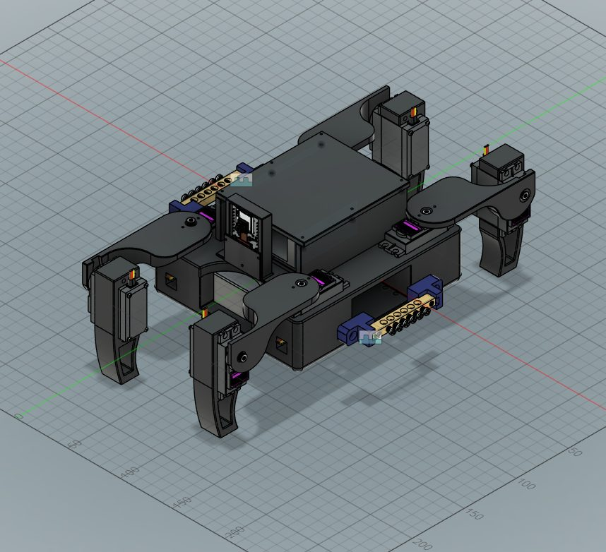
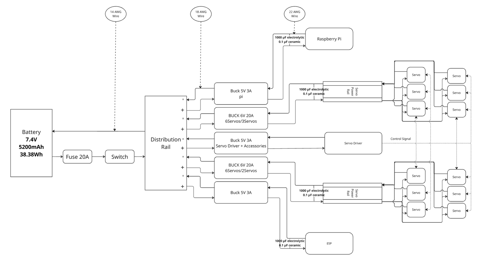

A
RoboCloud-Safe
Cloud-assisted control for low-cost robots, where the robot keeps the final say. Two-person team.


- Built two robots: a 5-DOF robotic arm and a quadruped rover, both with 3D-printed structures.
- Redesigned the rover from a 12-servo hexapod to an 8-servo quadruped to cut current demand, lower the center of gravity, and simplify the gait.
- Set up the rover's power system with separate servo and logic rails, wiring sized for servo stall current, and decoupling for noise.
- The robots never act directly on cloud commands. A local safety layer checks each signed, time-limited command against motion bounds and rate limits, and handles emergency stops.
- Owned integration testing and documentation. Traced dropped frames to network saturation and a backed-up inference queue, then added adaptive frame throttling.
- Platforms
- 5-DOF arm, ~250 mm reach; quadruped rover, 8 × MG996R
- Control path
- Laptop → Raspberry Pi (UDP/TCP) → ESP32-S3 (UART) → PCA9685 (I2C, 12-bit PWM)
- Power
- 7.4 V 5200 mAh LiPo, buck to 6 V servo rail, 14 / 18 AWG
- Vision
- YOLO detection + depth estimation for live object following
- Cloud
- API gateway routing to separate vision and LLM-planning services